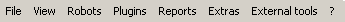
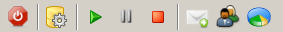

χirp Workspace
χirp offers a customizable and on-the-fly translatable graphical user interface. The
workspace can be devided in the 5 following parts.
Menu and tool bars
Status bar and tray
Workbench
Included panels
Before we take a closer look at the parts mentioned above, we look at the workspace at a whole.
The picture above shows a possible arrangement of the plugins and internal panels.
Panels that are created, because of loaded plugins are marked blue. Red marked panels are
internal ones and the yellow marked spots are mixed plugin-created and internal, menus and tool bars.
Menu and tool bars
The menu is devided into eight sub-menus: 
The File menu contains entrys for opening the profile, robot and communication specification
editors. The menu also contains entrys for the preferences dialog and for closing the application.
The View menu contains entrys for showing or hiding the status and tool bar. It also has an entrys
which locks the tools on the tool bar, so they can't be moved to a custom order. At last the menu contains entrys
for showing or hiding the internal panels, f.e. the live chart panel.
The Robots menu contains sub-menus for each loaded profile. These sub-menus contain entrys
for each robot assocciated with the profile. These entrys show or hide the complete robot tab in the
workbench area.
The Plugins menu is a context sensitive menu. It contains the non-report, non-embedded plugins for the
currently active robot. It also contains an entry for opening the preferences dialog.
The Reports menu is a context sensitive menu. It contains the report plugins for the currently
active robot and an entry for opening the report search.
The Extras menu contains entrys for opening the mail client, the contact management, the chart generator and
the TesterBot user interface.
The External tools menu is a context sensitive menu, which contains the user-defined external tools for the
currently active profile.
The ? menu contains entrys for showing the info, plugin info and help dialogs.
There are two tool bars available. The application tool bar makes several functions available as tool items.
The most important functions are made availabe over the tool bar. As an additional feature there is a timer.
You may start, pause and stop the timer and can see the elapsed time in the robot toolbar. The start, stop and pause
tool items in the application tool bar controls all timers of all robots. The application can also hold tool items created by
a plugin.

The robot tool bar is alsomst completely driven by plugins. The first drop-down menu holds the entrys of communication
interface plugins, the second one holds the protocol plugins available for the robot. You have to choose one of each
to connect to a robot. This can be done by clicking the plug tool item left of the drop-down menus. The robot toolbar has
the timer display and controls for the timer of this robot. Also the tool bar can hold items created by a plugin.
Status bar and tray
The status bar shows information about the current active robot, the connections status, the data traffic and the
status of the power sources of the robot. Only one power source status can be shown. If a robot has more than one power
source, the first one is shown by default. The following power sources can be made visible by right-clicking on the battery icon
in the bottom right corner. The desired power source can be chosen from the opening menu.
Right-clicking on the tray icon opens a menu with several functions which can be found in the menu and tool bar also.
Workbench
The workbench itself consists of several pluin-based of integrated panels. The panels can be moved and resized.
To move a panel just click and hold the left mouse button on the panels header. Drag and drop the panel to its new position.
The layput of the workbench will be saved when χirp is closed.
A panel can be shown in an own window by clicking on the window icon in its header.
A panel can also be maximized within χirp by clicking on the maximize icon.
Included panels
There are four included panels which are not created by a plugin.
System log
Live charting
Recorder
Robot overview
The System log shows log messages created by the Log4J logging system.
With the Live charting panel a real time plotting of received sensor values is possible.
The Recorder can record the received vaules of selected sensors to the database.
Finally the Robot overview shows an abstract view of the robot with the attached sensors.
Read more about use of these panel in the corresponding chapters.